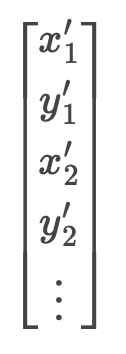
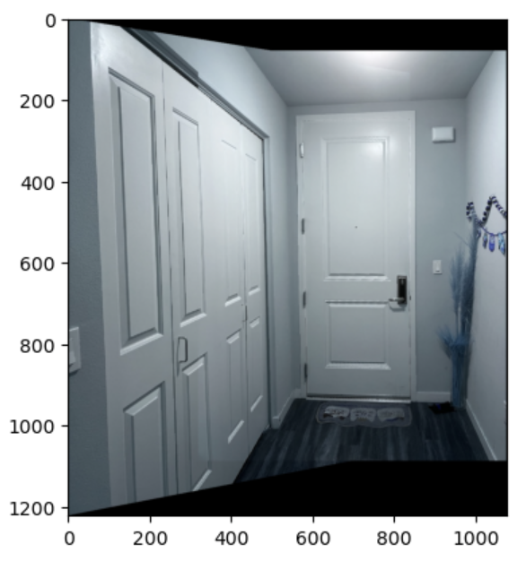

Here are some pictures I took!
First set:

Second set:


Third set:

To compute the homography matrix, I first generated 15 corresponding points in each pair of images using the tool provided. Then, I set up a linear system of 15 equations (Ah=b) and solved it using np.linalg.lstsq.
A is

b is
To warp an image, I first found the warped corners using the homography matrix and thus found the bounding box size. Then, I used inverse warping to map the points on this plane. Below are the warped images in each pair.


To make sure that my homography/warping worked, I took pictures of rectangular items from a side angle and used my warp function to rectify them. I used the provided tool to generate 4 pairs of corresponding points by clicking the 4 corners in the image and manually defining im2_points to be a rectangle.
Example 1:
Example 2:

I first found the bounding box size by finding all the corners of the im1(warped) and im2(unwarped). Then, I set up 2 canvases of this size, one for im1(warped) and another one for im2(unwarped). I then shifted im2 to the correct location based on min_x and min_y of the corners. Eventually, I blended the 2 canvases together to generate the mosaic.
First set:

Second set:

Third set: